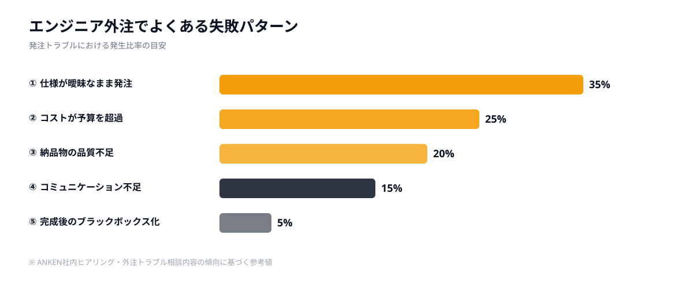
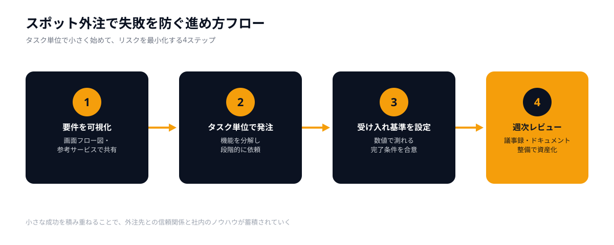

なぜエンジニア外注は失敗しやすいのか
「外注したシステムが使い物にならなかった」「予算の倍以上かかった」「納期を3ヶ月過ぎても完成しない」——エンジニア外注にまつわるトラブルは、日本の中小企業に珍しくありません。
失敗の根本原因のほとんどは、発注者とエンジニアの情報の非対称性にあります。技術的な知識がない発注担当者が、要件の詳細を言語化できないまま契約を結んでしまう。あるいは、受け取ったエンジニア側が「おそらくこういうことだろう」と解釈して進めてしまう。この「認識のズレ」が積み重なり、最終的に大きなトラブルに発展します。
この記事では、エンジニア外注でよくある失敗パターン5選とその対策を解説します。加えて、スポット発注という手法がなぜこれらのリスクを下げやすいのかを説明します。

失敗①：仕様が曖昧なまま発注してしまう
よくある状況
「社内の業務管理システムを作りたい」「データをCSVで出力できるようにしたい」——こうした大まかな要望だけを伝えて発注し、完成物を見てから「これじゃない」となるパターンです。
発注者にとって「当然そうなるはず」と思っていた仕様が、エンジニアには全く伝わっていなかった、というケースが典型的です。
対策
発注前にワイヤーフレームや画面フロー図を作ることが最も効果的です。Figmaの無料プランやGoogle スライドを使えば、非エンジニアでも画面の遷移イメージを作れます。「誰が」「どの操作をして」「何が表示されるか」を1画面ずつ定義するだけで、認識のズレは大幅に減ります。
また、「完成のイメージに近い既存サービス」をいくつか挙げるだけでも、エンジニア側の理解が格段に早まります。
✅ チェックポイント
発注前に「誰が・いつ・何のために使うか」「どんな操作ができるか」「出力されるデータの形式」の3点を文書化しましょう。
失敗②：コストが予算を大幅に超過する
よくある状況
当初の見積もりは100万円だったのに、「仕様変更」「追加要件」「バグ対応」が重なって最終的に300万円になった——このようなコスト超過は、特に一括受託型の外注でよく起きます。
受託側は変更のたびに追加費用を請求し、発注側は「断れない状況」に追い込まれます。結果として、最初から予算を大幅に超えた投資になってしまうのです。
対策
機能を最小単位（タスク）に分解して、優先度をつけた上で段階発注するのが有効です。「まず管理者ログイン機能だけ作る」「次にデータ一覧画面を追加する」というように、小さく区切って発注すれば、途中でスコープを変更しても追加コストが発生しにくくなります。
また、固定価格よりも工数単価×時間のタイム制の方が、追加要件に対して透明性のある対応が可能です。スポット外注はこのタイム制に近い料金体系を採用していることが多く、費用が見えやすいのが特徴です。
失敗③：納品物の品質が基準を満たさない
よくある状況
動作はするが、実際の業務には使いにくい。バグが多く、本番運用に乗せたら次々と問題が出てくる。「動くかどうか」だけを基準にして受け入れテストをしてしまったために起きる失敗です。
また、外注先が複数の案件を同時に抱えており、十分なテスト工数が確保されていなかった、というケースも多くあります。
対策
受け入れ基準（アクセプタンスクライテリア）を事前に合意しておくことが重要です。「ログイン処理が3秒以内に完了すること」「CSV出力が1万件以上のデータでもエラーにならないこと」など、数値で測れる基準を設けておくと、品質の評価が客観的になります。
さらに、定期的なレビュー（週1の進捗確認など）を仕組みとして組み込むと、品質上の問題を早期に発見・修正できます。
失敗④：コミュニケーション不足で認識がずれる
よくある状況
メールだけでやり取りしていたら、1週間後に全く違う方向で開発が進んでいた。Slackで質問に答えていたつもりが、エンジニア側は別の解釈で作業していた——コミュニケーション不足は、仕様の曖昧さと並ぶ失敗の最大原因です。
特に、発注担当者がIT知識に不慣れな場合、「技術的な質問の意味が理解できず、返答が遅れてしまう」という悪循環が起きやすくなります。
対策
週1回の短いビデオMTG（30分以内）を必ずスケジュールに入れるだけで、認識のズレを早期発見できます。テキストだけでは伝わりにくいニュアンスも、会話なら1分で解決することが多いです。
また、質問や決定事項は必ず議事録や共有ドキュメント（Notion・Google Doc等）に残す習慣をつけましょう。後から「そんな話はしていない」というトラブルを防げます。

失敗⑤：完成後に修正が効かなくなる
よくある状況
システムが完成して納品されたが、作ったエンジニアがいなくなったためコードの意味が誰にも分からず、修正や機能追加ができない——いわゆる「ブラックボックス化」です。
特定のエンジニアへの依存度が高くなり、その人が離脱したとたんにシステムが「触れないもの」になってしまうケースは、中小企業では非常によく見られます。
対策
コードをGitHub等で管理し、リポジトリの所有権を発注者側に持たせることが鉄則です。加えて、README・設計書・APIドキュメントの整備をスコープに含めるよう契約時に明示しましょう。
将来の保守を見越して、「別のエンジニアが読んで理解できるコード」を成果物の条件にしておくと、長期的なリスクを大幅に減らせます。
スポット発注が失敗リスクを下げる理由
ここまで紹介した5つの失敗は、いずれも「大きな契約を一括で結んでしまったこと」に起因するものが多いです。スポット発注はこの構造的な問題を解決しやすい手法です。
理由①：小さく始めてリスクを限定できる
スポット発注では、まず「1機能・1タスク・1日〜数日分」という単位で依頼します。最初の小さな発注でエンジニアの品質・コミュニケーションスタイルを確認できるため、合わなければそこで止められます。一括契約のように、何百万円も払ってから「合わない」と気づくリスクがありません。
理由②：仕様変更に柔軟に対応できる
タスク単位で発注するため、次の依頼前に要件を追加・変更できます。「追加要件を言い出しにくい」という心理的な障壁がなく、開発途中の気づきをすぐに反映できます。
理由③：即戦力のエンジニアと直接やり取りできる
ANKENのようなスポットマッチングサービスでは、実際に手を動かすエンジニアと直接コミュニケーションを取れます。大手受託会社経由のように「窓口担当者 → PM → エンジニア」という伝言ゲームが発生しないため、認識のズレが格段に起きにくくなります。
理由④：費用の透明性が高い
「時間単価 × 稼働時間」という明確な料金体系が多いため、見積もりと実費の乖離が起きにくいです。また、小さな単位でコストを確認しながら進められるため、予算管理がしやすくなります。
💡 スポット発注を始める際のポイント
最初の依頼は「調査・設計フェーズ」のみに絞るのがおすすめです。「今のシステムの課題を洗い出して、解決策を提案してほしい」という依頼から始めると、エンジニアの実力とコミュニケーション適性を低リスクで確認できます。
よくある質問
- Q. エンジニア外注でよくある失敗は何ですか？
- A. 仕様の曖昧さ、コスト超過、品質トラブル、コミュニケーション不足、修正不可の5つです。
- Q. 失敗を防ぐには何が重要ですか？
- A. 発注前に要件と完了条件を明確にし、小さく始めて成功体験を積むことが重要です。
- Q. スポット発注は失敗リスクを下げられますか？
- A. 下げられます。タスク単位で依頼するため、大規模な失敗につながりにくい構造です。
まとめ：小さく始めて成功体験を積む
エンジニア外注でよくある失敗5選を振り返ると、対策の方向性は一貫しています。
- 失敗①（仕様の曖昧さ）：画面フロー図と参考サービスで要件を可視化する
- 失敗②（コスト超過）：機能を最小単位に分解し、段階的に発注する
- 失敗③（品質不足）：受け入れ基準を数値で定め、定期レビューを組み込む
- 失敗④（認識ずれ）：週次MTGと議事録で合意を可視化・記録する
- 失敗⑤（ブラックボックス化）：Gitリポジトリとドキュメント整備を納品物に含める
そして、これらすべてに共通する最も根本的な対策が、「小さく始める」ことです。一括大型契約ではなく、タスク単位のスポット発注から始めることで、失敗のダメージを最小化しながら経験を積めます。
ANKENでは、即日対応可能なスポットエンジニアへの発注を固定費ゼロで始められます。まずは小さな開発課題を一つ持ち込んでみてください。
要件の整理から任せられるスポットエンジニアへ即日マッチング。固定費ゼロ・1タスクから依頼OK。まずは相談だけでも歓迎です。
👉 無料でスポット依頼を相談する要件が固まっていなくてもOK。失敗しない発注の進め方からご相談いただけます。